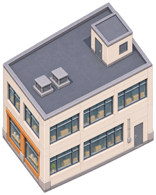
B01 三层街楼主用｜局部已显示或可供摆放，未全局精校
[224, 280] / 97914 B34张分类运行图，≤280。默认尺寸仅起点；用户可移动、等比缩放、新放/删除装饰。候选本体问题与布局未精校分开，不设1/2实例限制。
163物件可编辑初稿预览 · 用户Tiled源 · 素材对象盘 · 3步使用

B01 三层街楼主用｜局部已显示或可供摆放，未全局精校
[224, 280] / 97914 B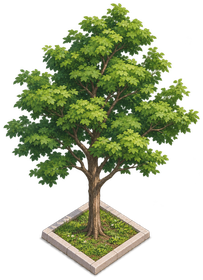
T01 树池街树主用｜局部已显示或可供摆放，未全局精校
[203, 280] / 89410 B主用｜局部已显示或可供摆放，未全局精校
[279, 280] / 108120 B主用｜局部已显示或可供摆放，未全局精校
[275, 280] / 111668 B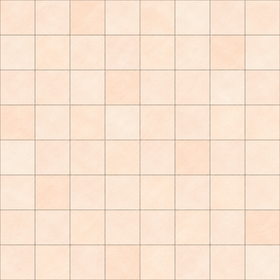
S01-paving 铺装小纹理主用｜局部已显示或可供摆放，未全局精校
[280, 280] / 87378 B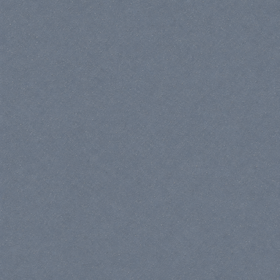
S02-asphalt 沥青小纹理主用｜局部已显示或可供摆放，未全局精校
[280, 280] / 104502 B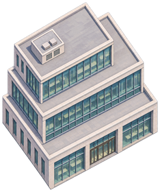
B02 退台办公楼主用｜局部已显示或可供摆放，未全局精校
[234, 280] / 108418 B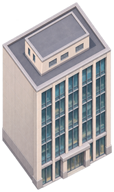
B03 窄高楼主用｜局部已显示或可供摆放，未全局精校
[166, 280] / 77690 B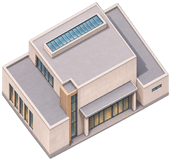
B04 低层公共展馆主用｜局部已显示或可供摆放，未全局精校
[280, 263] / 99335 B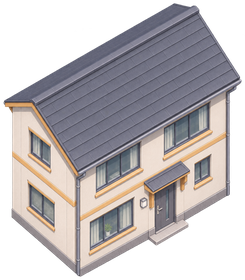
B05 坡顶住宅主用｜局部已显示或可供摆放，未全局精校
[245, 280] / 98302 B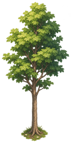
T02 自然阔叶树主用｜局部已显示或可供摆放，未全局精校
[139, 280] / 53828 B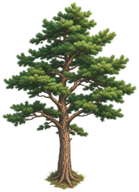
T03 针叶树候选候选｜本体或视角有争议，默认不入雏形
[203, 280] / 79536 B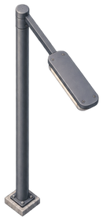
L-near 近侧向内灯主用｜局部已显示或可供摆放，未全局精校
[131, 280] / 22471 B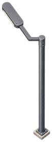
L-far 远侧向内灯主用｜局部已显示或可供摆放，未全局精校
[102, 280] / 13888 B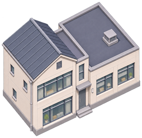
B06 错落住宅主用｜局部已显示或可供摆放，未全局精校
[280, 271] / 105898 B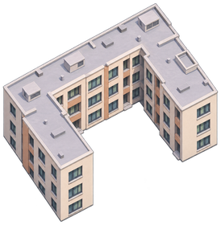
B07 U形院楼主用｜局部已显示或可供摆放，未全局精校
[274, 280] / 91452 B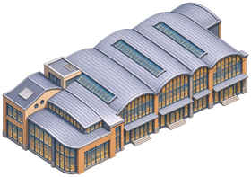
B08 连拱顶市场主用｜局部已显示或可供摆放，未全局精校
[280, 197] / 92845 B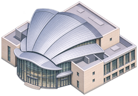
B09 扇壳公共楼候选｜本体或视角有争议，默认不入雏形
[280, 195] / 91594 B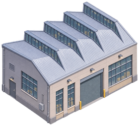
B10 锯齿厂房候选｜本体或视角有争议，默认不入雏形
[280, 254] / 112639 B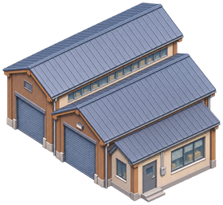
B11 坡顶作坊候选｜本体或视角有争议，默认不入雏形
[280, 257] / 120813 B可手调｜待画面确认
[280, 215] / 74130 B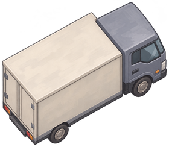
V02-v2 箱形货车静态候选可手调｜待画面确认
[280, 244] / 75239 B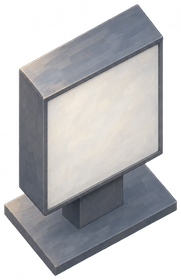
P01 空白灯箱主用｜局部已显示或可供摆放，未全局精校
[181, 280] / 58454 B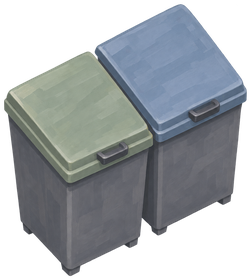
P10 双垃圾桶主用｜局部已显示或可供摆放，未全局精校
[251, 280] / 75841 B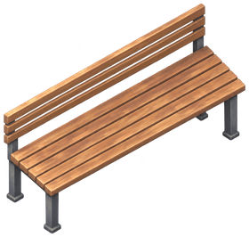
P03 长椅主用｜局部已显示或可供摆放，未全局精校
[280, 266] / 81794 B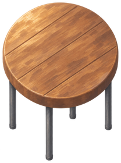
P05 圆凳主用｜局部已显示或可供摆放，未全局精校
[208, 280] / 71428 B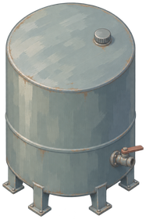
P02 油箱主用｜局部已显示或可供摆放，未全局精校
[187, 280] / 67185 B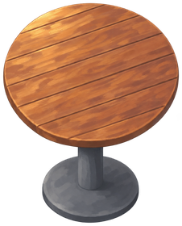
P04-v2 圆桌中央柱版可手调｜待画面确认
[226, 280] / 78446 B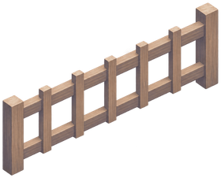
P06 短围栏方向一可手调｜待画面确认
[280, 226] / 46207 B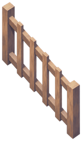
P07 短围栏方向二可手调｜待画面确认
[164, 280] / 35247 B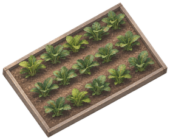
P08 菜畦主用｜局部已显示或可供摆放，未全局精校
[280, 230] / 88282 B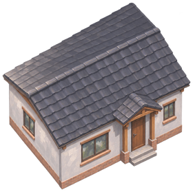
B12 单层住宅候选可手调｜待画面确认
[280, 279] / 109193 B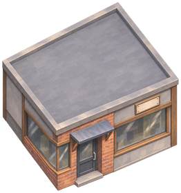
B13 单层街铺候选可手调｜待画面确认
[262, 280] / 104469 B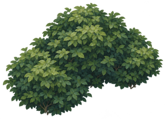
T05 低灌木簇可手调｜待画面确认
[280, 201] / 84495 B